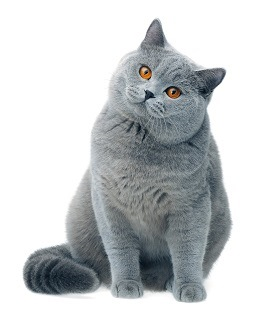
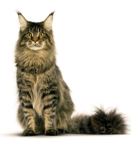
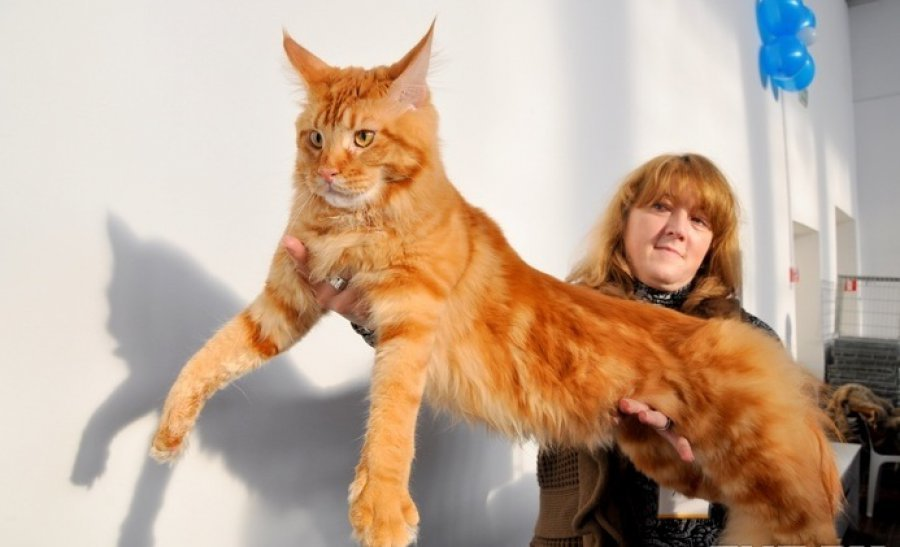

Сейчас есть в наличии:



Британские коты. На сегодняшний день британские коты наиболее популярны и желаемы среди нашего населения. Они обладают густой короткой шерстью, красивыми круглыми глазами. Многим детям и людям они напоминают плюшевые игрушки. Её дымчатый, с голубым оттенком окрас подарил её еще одно прозвище «Британская голубая». Это спокойные, не «шкодливые» домашние любимцы, истинные аристократы. Они находят общий язык со всеми членами семьи, в которой живут, и воспринимаю её как свой клан. В уходе они не привередливы, но один раз в неделю их шерсть необходимо обязательно расчесывать. Британцы пользуются большим спросом у всех слоев населения, поэтому продать таких котят можно как с родословной, так и без неё. Естественно, что и ценовая политика вопроса будет либо высокой, либо низкой

Мейн-Кун. Это одни из самых больших котов в мире. Отличительной чертой, помимо их ушек, являются также и те звуки, которые они создают. Их мяуканье больше напоминает курлыканье. Это спокойная порода котов. Они ласковые, миролюбивые и дружелюбны. В тоже время они довольно самостоятельны, и потребуют своего личного пространства. Так как это длинношерстые коты, они потребуют особого внимания в уходе за шерстью. Хотя, в отличие от персов, их шерсть и не путается так сильно, но всё же расчесывать мейн-куна необходимо 2-3 раза в неделю.
Предоставим консультацию,если у Вас:

"Котенка нужно готовить к выставке с рождения" - этот тезис в отношении поведения животного вполне справедлив. Выставочная обстановка - незнакомая территория, незнакомые кошки - является мощным стрессом для животного, особенно, если оно не привыкло доверять людям и быстро осваиваться в новых местах. Что касается доверия и легкости контактов с людьми, то эти качества начинают формироваться в самом раннем возрасте. Маленьких, еще подсосных, котят желательно периодически брать в руки - это приучает их к человеку (так называемая реакция на хэндинг). Молодые особи, выросшие при минимальном общении с людьми (например, при вольерном содержании кошек в питомнике), обычно пугливы и малообщительны. Здоровье представленного на выставку животного должно подтверждаться:

После проведения выставочного груминга животное должно демонстрировать:

Говоря о породистых кошках, следует учитывать особенности их содержания при разведении. Вам потребуется приобрести вспомогательные инструменты: